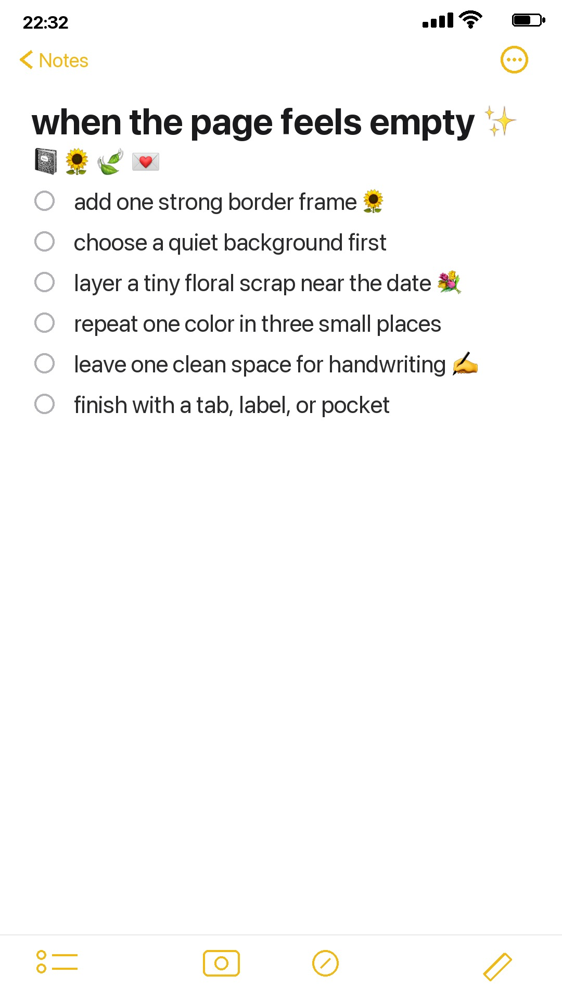
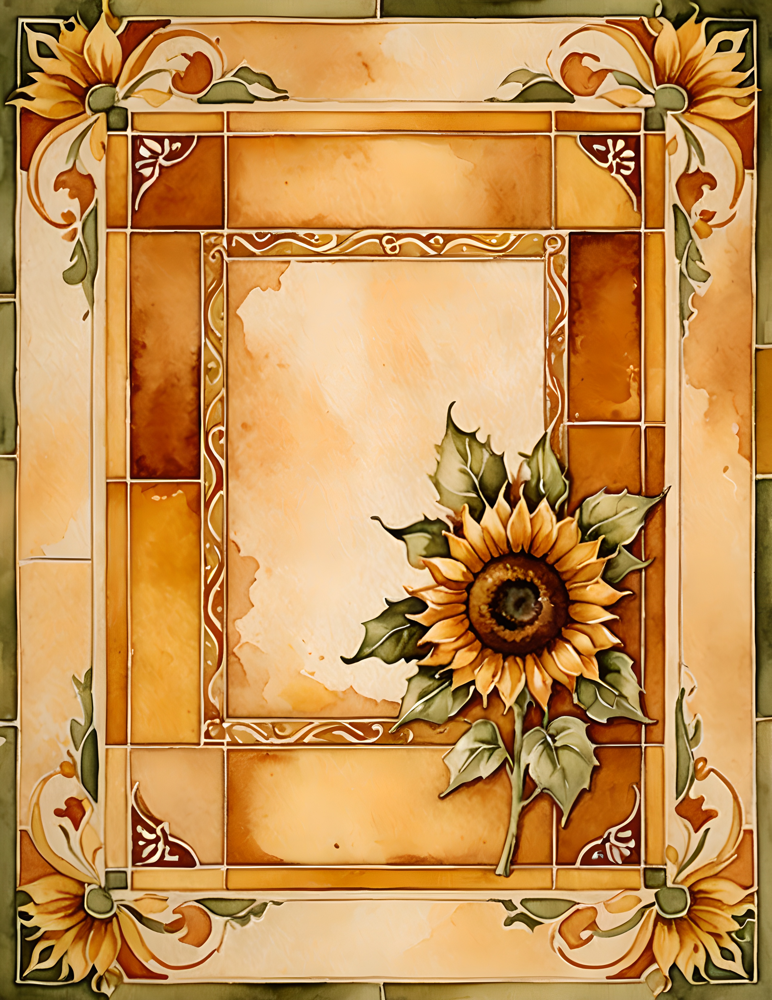
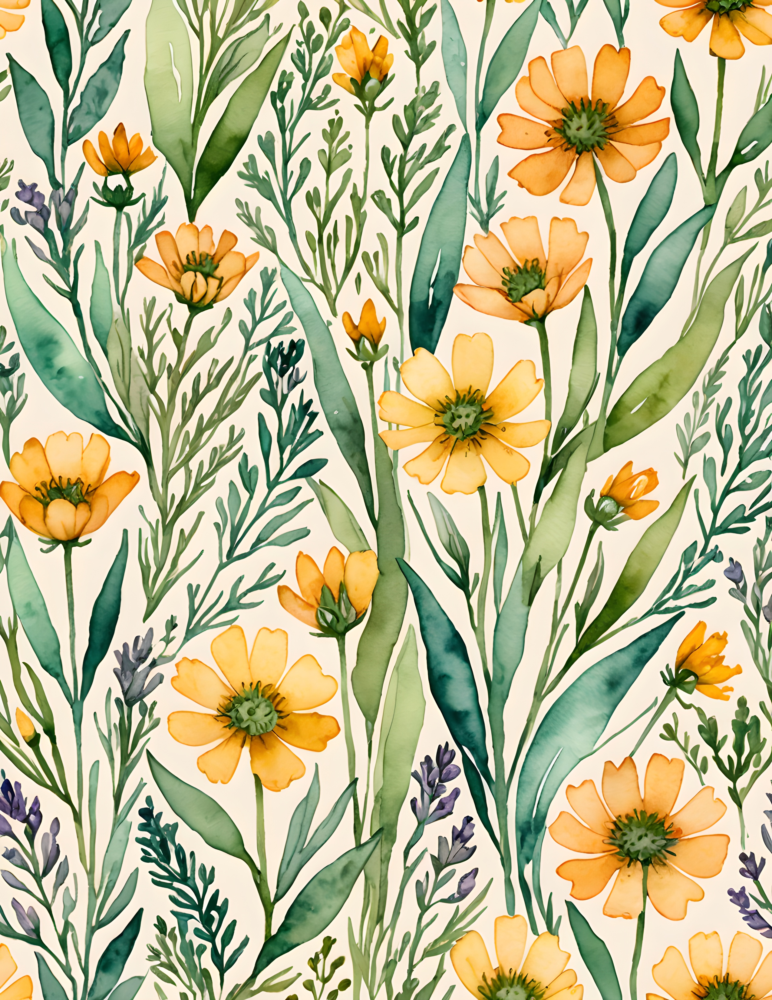

Sometimes a journal page is not bad. It is just unfinished in a quiet way. The colors are fine, the paper is pretty, the scraps are on the desk, but the page still has that slightly empty feeling.
When that happens, I like using a very small checklist instead of redesigning the whole spread. One strong edge, one quiet background, one tiny repeated color, and one clean space for handwriting can do more than ten extra pieces of paper.

Start with one strong frame
A border frame is useful when the page needs structure. It gives the eye somewhere to land before you add photos, notes, or pockets. Sunflower Days is a good example because the frame already has warmth and movement, so the rest of the spread can stay simple.

Choose a quiet background first
If the page feels too busy, do the opposite. Start with a background that already has atmosphere but still leaves room to write. Forest Books works well for this because the library mood is deep and cozy, but the open desk and window areas can hold a small note, date, or memory.
Add a patterned layer
Pattern is best when it has a job. Use it as a side strip, pocket liner, tag backing, or torn corner rather than covering the whole page. Boho Bloom gives that floral, collected feeling without needing a separate color palette plan.

Use the examples together
These three kits solve different page problems. Sunflower Days gives you a bright focal point. Forest Books gives you a calmer base. Boho Bloom gives you a pattern layer when the spread needs texture. You do not need to use all three at once; the point is to notice which problem the page actually has.
If your page feels empty, start with one of those decisions: frame, background, or patterned layer. It keeps the spread from turning into a pile, and it gives the finished page a reason to exist.